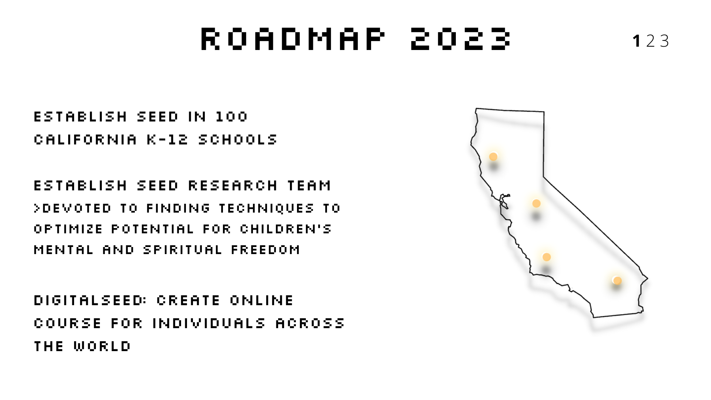
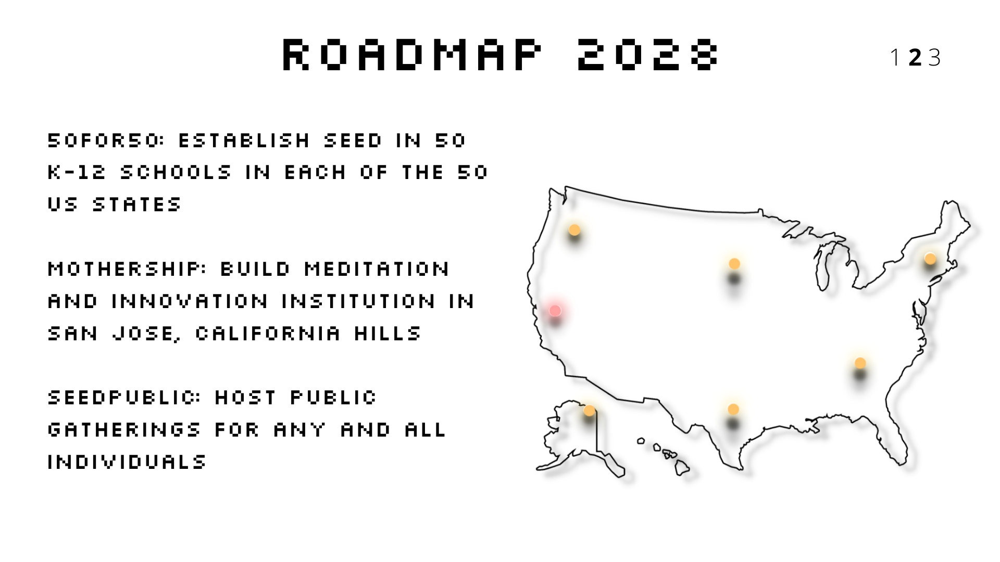
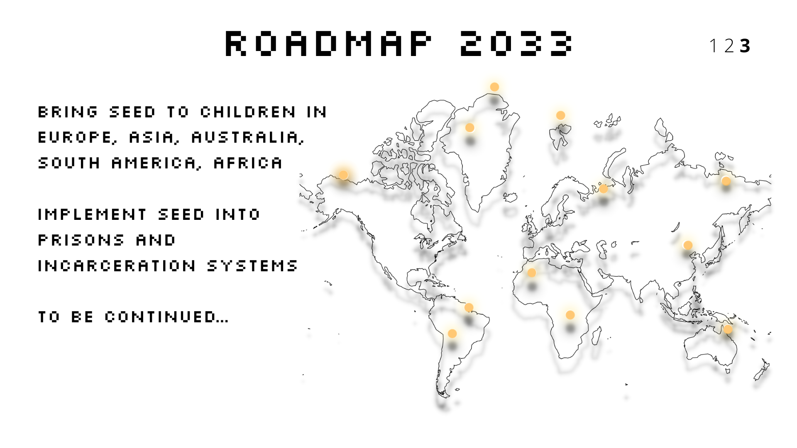

Seed is the acronym for Self Exploration Education Design. A design that focuses on cultivating people's lives through meditation techniques and processes that have been proven through decades of scientific research and used for centuries in human history to provide individuals with heightened senses of emotional intelligence, love for their lives, overcoming traumas, inspiring ideas, sociability, physiological health, and mystical experiences.
Within the education system, we can transform the capabilities of our children. Within the workspace, we can bring teams together. Within our daily lives, we can transcend towards new heights of our own consciousness - by reconnecting with the neurophysiology of the heart and mind, we can become the vehicles of wisdom we always have been and carry our world to the next stages of human development and evolution. The seed must be planted so the flower can sprout, expand, and bloom.
And the time is here and now.



Involvement
We are looking for any and all individuals to grow this mission into a process of evolution beyond our wildest dreams.
> learn and guide this mission's events in schools, silicon valley, and public conventions.
> help us get in touch with districts, companies, convention centers, parks
> computer engineers, graphic designers, video editors, sound engineers all welcomed to:
upgrade this website to a greater potential
create online courses for individuals around the world
create and research amazing sounds that have the ability to improve the meditation experience.
Join our discord community to build ideas, provide feedback, recommend innovations, conversate, and grow.
SEED Classroom
Our mission to bring an understanding of the human neurophysiology and a practice of collective meditation techniques to children and growing adolescents in K-12 schools. We envision not only eliminating depression, anxiety, and addictions among youthful indidviduals, but also regathering the vibrance of the child's soul to embrace the journey of their lives, spark their intuitive creative, and use it to innovate and guide the world's new forming culture to evolutionary heights. Going directly into the school systems is a vital importance for change and transformation for the prosperity of the coming generations.
what world are you trying to create? start with those who will be here after us
SEED Public
An extraordinary experience with ordinary people.
In development...
The SEED Mission
Children when growing in their early years are full of purity, wisdom, joy, and creativity, they bring the sacredness of the human being to light. Overtime, cultural conditioning kicks into the programs of children’s brains and creates habits and attachments that create a disconnection from their true reality, and as they grow into adolescents and then adults, we see a trend of bad habits, addictions, and challenges in their lives. As a society, challenges, bad habits, addictions, and sufferings are seen as ‘normal’ because of the cultural acceptance of how things are.
As human beings, are we obligated to live in stress and struggle, or are we capable of living effortless lives full of abundance and joy? Are we capable of living in peace, transparency, and harmony with our fellow human beings and the rest of the living world? Are we capable of living the happy and content lives we are constantly chasing in our outer world?
If the possibility is there, let us chase it, let us take a big leap forward of faith to become something greater as living beings, something greater that is already inside of us, let us transform. Let us start with the generations to come. The old ways of education have failed the children of the new world, and they will continue to do so with the way children are expressing themselves with more and more individuality and rebelliousness within the academic experience.
There will have to be a more evolved system, that embraces the changes in our children, because they are the future, they are the map of how the world is growing and flowing, we must trust them to guide us, but we must provide them with the environment in which they can experience their true selves, not through a set of rigorous subjects they are thrown into.
With the science that has been brought to surface from the last several decades of how the unconscious mind is the body, what we can do with the mind and body to produce elevated emotions and positive action, and why such ideas are crucial to our survival and livelihood, we have a chance for implementation. If we do not take the opportunity to evolve beyond our old ways of thinking about the world and adopt the more complete understanding of the purpose of our existence, there will only be an increased amount of greed, decreased amount of resources, and lack of ideas and leadership. The human evolutionary story thrives on its ability to change and transform into novel areas of function, here is the next step: to have children guide the new world. The older generations currently in power will have trouble with this change because of their limited perception of the world. Let us create children with open minds and expansive imagination.
This is where we can evolve. This is the seed we plant into the generations to come. Here at SEED we see coherent, inspired, and aware children bringing science fiction to reality, reviving the natural world and connecting with plants, animals, and other organisms, and cultivating implementation of the sense of interconnectivity in the objective world. These children will inspire the world as a form of collective leadership to communicate with intention, express ultimate generosity, and be courageous in the face of worldly adversity. The ideas of eastern philosophy and western science are a novel experience for the evolution of human history, and they are here and can be shared to the next generations to guide us in a novel path of understanding the world for what it truly is.